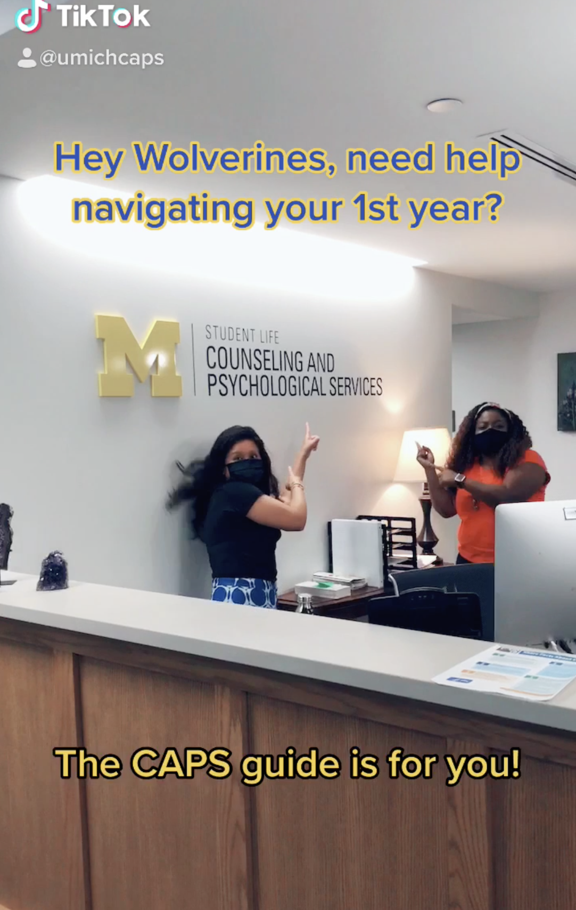

Welcome to CAPS
We are happy to offer both in-person and virtual services. CAPS is committed to creating an environment based on our values of multicultural, multi-disciplinary and multi-theoretical practices that allow our diverse student body to access care, receive high quality services and take positive pathways to mental health.
Our Front Desk (Michigan Union 4th Floor) is open and ready to help support you -- staff members are available throughout the day to assist you with your needs to answer questions, and get you to the right place. We can be reached by phone at: (734) 764-8312.
Services Offered
Individual Peer Counseling

Individual Peer Counseling (IPC) is designed to offer a new way to meet the needs of students across the University of Michigan. We are here to support student mental health and offer students a place to vent.
Uwill Teletherapy Services
Uwill is an addition to CAPS services that provides students with video, phone, chat, and message sessions with licensed mental health professionals at no cost. This additional counseling option offers students greater flexibility and allows CAPS to expand its service capacity.
First Year Guide
U-M Counseling & Psychological Services (CAPS) welcomes all of our 1st year students including those who are living on campus and those who are located remotely. We are happy to launch a new resource created exclusively for you: “Go Blue! A New Student’s Guide to Surviving and Thriving at U-M: Mental Health Tips.”
Self-Care For Incidents Of Campus Climate Concerns
When faced with social injustices and bias incidents, it is extremely difficult to cope and know what to do. Feeling overwhelmed with the current socio-political state, experiencing discrimination, or being impacted by contentious people or policies increases stress which remains correlated to negative mental health outcomes. During these times, it remains imperative that we take care of ourselves, take care of loved ones, and take care of our campus community. We all have the power to spread kindness, celebrate diversity and inclusion, and promote social justice.
Scope of Services
In support of the educational goals of the University and the Division of Student Life, Counseling and Psychological Services (CAPS) provides a range of clinical, preventative, and training services consistent with the practices and standards of a nationally accredited university counseling center. CAPS is committed to creating a safe and supportive environment based on our multicultural, multi-disciplinary and multi-theoretical values and practices that allow our diverse student body to access care, to receive high quality services, and to take positive pathways to mental health.
Togetherall

Recognizing that some students who are feeling isolated, depressed, or anxious may find it challenging to connect with our resources and verbally express their needs, Counseling and Psychological Services (CAPS) is pleased to announce the piloting of Togetherall, an online, anonymous peer-support tool available for free to our students. Togetherall is a clinically moderated, online peer-to-peer mental health community that reaches and empowers a diverse population of students to anonymously seek and provide support
Sexualized Violence

Sexual violence does not discriminate. Both survivors and perpetrators come from all genders, cultures, races, ethnicities, sexual orientations, socio-economic status, and religions.
Support For Students Impacted By Campus Climate Concerns
As an agency, Counseling and Psychological Services (CAPS) remains committed to the celebration and promotion of diversity in all its forms. We condemn oppression in every form and work to provide a safe, welcoming and affirming environment for all persons. Creating and sustaining a welcoming campus climate requires mutual respect for all. And that means discrimination and harassment are not acceptable at the University of Michigan. At CAPS, we remain committed to affirming inclusivity, value, and belonging of all students.
Getting Started with CAPS
To start accessing our services, visit our office or contact us through our website. We encourage you to book an initial consultation to explore the best support options for your needs.
Contact Information
Phone: 734-764-8312 (24hrs)
Email: caps-uofm@umich.edu
Michigan Union
530 South State Street
Suite 4079